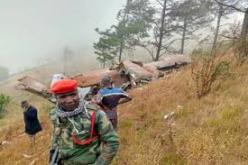

By Collegers Updated 10:05 PM IST, Tue June 11, 2024
Malawi is in mourning after the tragic death of Vice President Saulos Chilima and nine other passengers in a plane crash. The devastating news was announced by President Lazarus Chakwera on Tuesday, following the discovery of the wreckage near Mzuzu International Airport.
The plane, en route to Lilongwe, vanished after failing to land at Mzuzu International Airport, roughly 380 kilometers (240 miles) north of the capital. President Chakwera confirmed the completion of the search and rescue operation, revealing the heart-wrenching outcome.
"The search and rescue operation I ordered to find the missing plane that carried our vice president and nine others has been completed. The plane has been found. And I am deeply saddened and sorry to inform you that it has turned out to be a terrible tragedy," Chakwera said.
President Chakwera paid tribute to Vice President Chilima, praising him as "a good man, a devoted father and husband, and a patriotic citizen who served his country with distinction." The loss extends beyond his family and friends, affecting the entire nation.
Chakwera also mourned the other passengers on board, emphasizing the sorrow that has enveloped the country. The president noted the tragic nature of the accident, sharing that he had previously traveled on the same aircraft.
"Yet despite the track record of the aircraft and the experience of the crew, something terrible went wrong with that aircraft on its flight back to Lilongwe," he added.
On Monday evening, air traffic control had advised the vice president’s plane against attempting to land due to poor visibility, recommending a return to Lilongwe. Contact was lost shortly thereafter, prompting a search operation.
The Malawi Defence Force deployed drones and over 200 soldiers to search for the aircraft in the Chikangawa Forest reserve, the last known location of the plane's signals. Bad weather conditions, however, delayed rescue operations.
The remains of the victims were received in Lilongwe on Tuesday evening, with the country set to observe a 21-day national mourning period from June 11 to July 1. President Chakwera pledged that the vice president and the other victims will be laid to rest "in a dignified manner."
The tragic news has resonated worldwide. United Nations Secretary-General António Guterres expressed his sorrow, extending condolences to the families and the people of Malawi. “We offer condolences to their families and we stand with the people of Malawi at this sad time,” he said.
Saulos Chilima, 51, had recently returned to Malawi after attending the Korea-Africa Summit in Seoul. He served as deputy to former President Peter Mutharika from 2014 to 2019 and was re-elected as vice president in 2020. An economist by profession, Chilima was the first Malawian to lead Airtel Malawi.
“I consider it one of the greatest honors of my life to have had him as my deputy and counsellor for the past four years,” President Chakwera reflected.
Chilima leaves behind his wife, Mary, and two children.
This tragic incident in Malawi draws parallels with the recent death of Iran's President Ebrahim Raisi in a helicopter crash on May 20, 2024. The helicopter, a Bell 212, crashed near Jolfa, close to the Azerbaijani border. Such incidents underline the inherent risks of air travel and the profound impact of losing national leaders in such sudden and tragic circumstances.
The loss of Vice President Saulos Chilima and the nine other passengers is a profound tragedy for Malawi. As the nation embarks on a period of mourning, the international community stands in solidarity, honoring the legacy of a leader dedicated to his country. This somber event reminds us of the fragility of life and the importance of cherishing every moment with our loved ones.
"Truth Uncovered, Reality Restored."